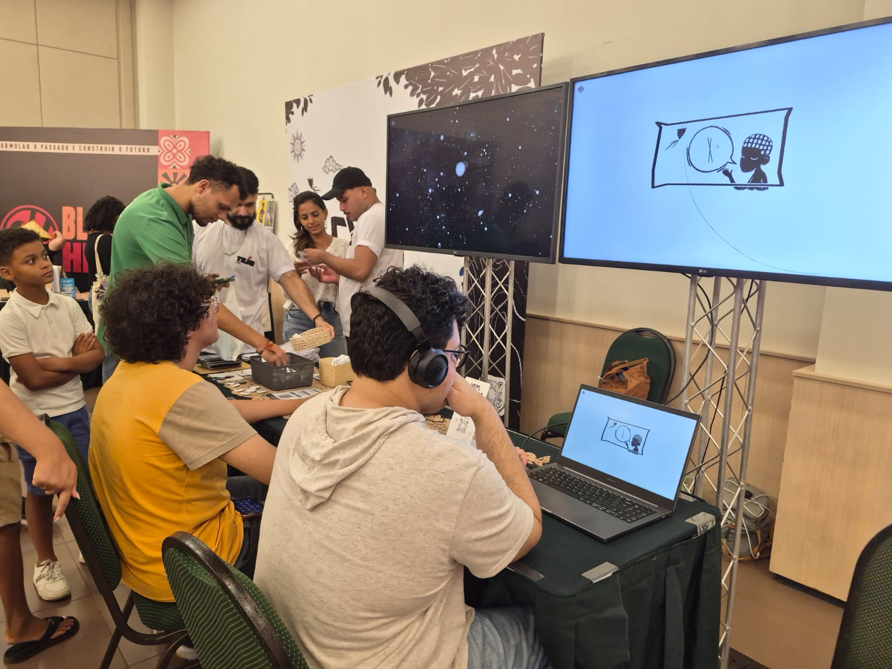

Vem, Exu
Apresentação pública da demo do jogo na Sala Black Heroes do SANA.
Leia maisEste é um documento de teste em HTML puro. Nenhum framework CSS ou classes complexas foram utilizadas. A estilização visual (fontes, cores, sombras e transições) é herdada nativamente do tejo-base.css.
No Tejo Estúdio desenvolvemos projetos que exploram a relação entre arte digital, narrativa interativa e tecnologia. Nossa investigação foca em como sistemas interativos podem ampliar experiências visuais e relações com o território.
“Minha prática investiga memória, infância e cultura popular por meio da criação de jogos narrativos e experiências interativas.”
As imagens envoltas na tag semântica <figure> ganham automaticamente nossa identidade visual: tons de cinza com retorno da cor no hover, bordas escuras e sombras brutais.